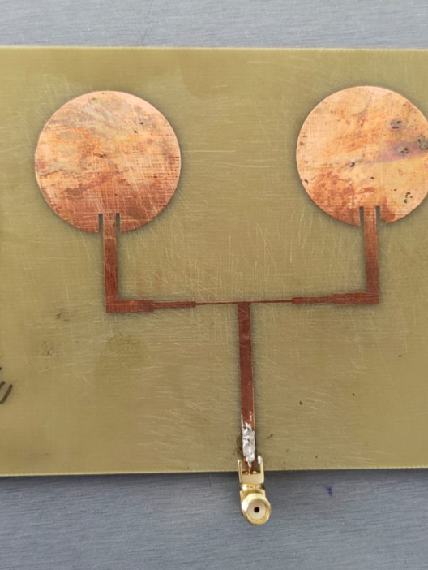

Dual Circular Microstrip Antenna
An RF antenna project involving the design, fabrication, simulation and measurement of a dual circular microstrip antenna.
Project overview
The project focused on designing a compact circular microstrip antenna structure and evaluating its RF characteristics through simulation and practical measurement.
The fabricated antenna uses two circular radiating elements connected through the printed feed structure. The project included PCB/patch fabrication and laboratory measurement so that the simulated/design behaviour could be compared with the physical antenna.
The work provided hands-on experience in RF layout, microstrip geometry, fabrication, impedance behaviour and antenna measurement.
System architecture & technical focus
DESIGN
Circular microstrip patch geometry designed for the target RF operating region.
SIMULATION
CST Studio Suite used for electromagnetic analysis and evaluation of antenna behaviour.
FABRICATION
The circular radiating elements and feed network were physically fabricated on a substrate.
MEASUREMENT
Practical RF measurement was used to observe return-loss behaviour and evaluate the fabricated antenna.
Work performed
- Designed the dual circular microstrip antenna geometry.
- Worked with the patch dimensions and printed feed structure.
- Simulated the antenna in CST Studio Suite.
- Fabricated the antenna on a PCB/substrate.
- Connected the fabricated antenna for laboratory measurement.
- Observed return-loss behaviour using RF measurement equipment/VNA.
- Compared the practical measurement response with the expected antenna behaviour.
- Studied RF parameters including return loss, VSWR, impedance matching and radiation characteristics.
Technology stack
Project media

